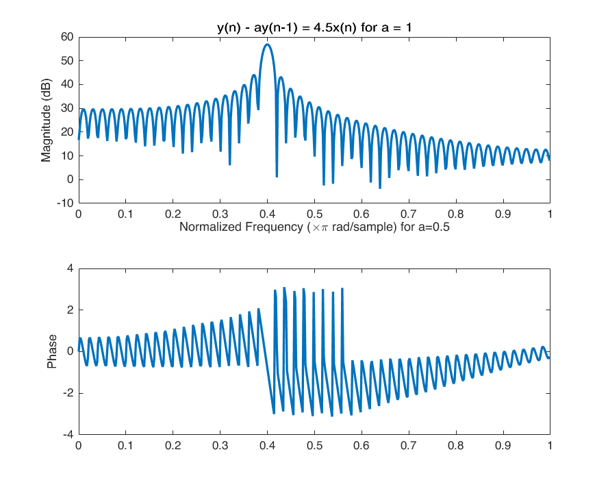
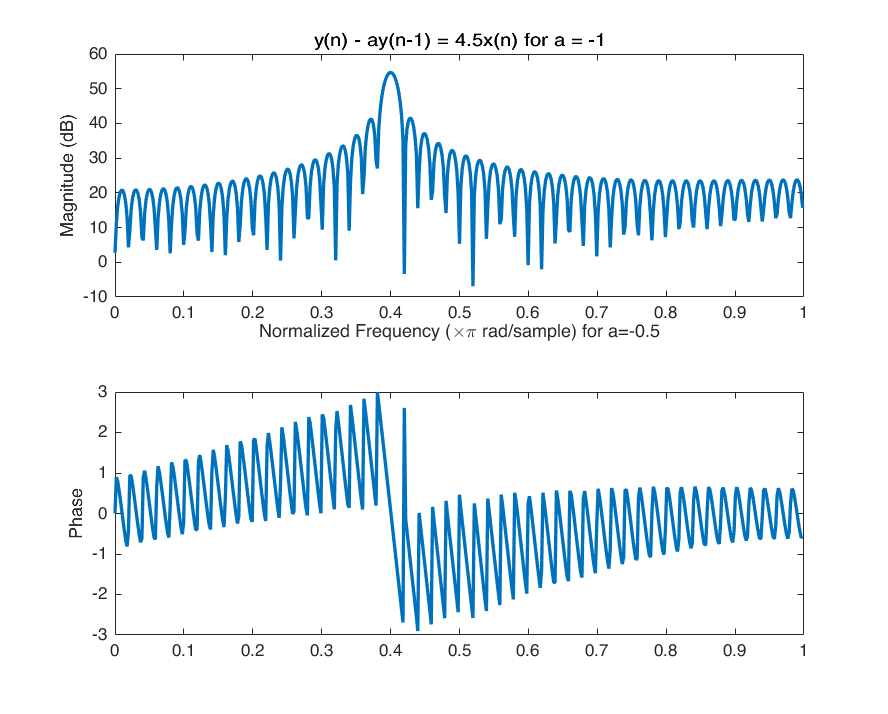
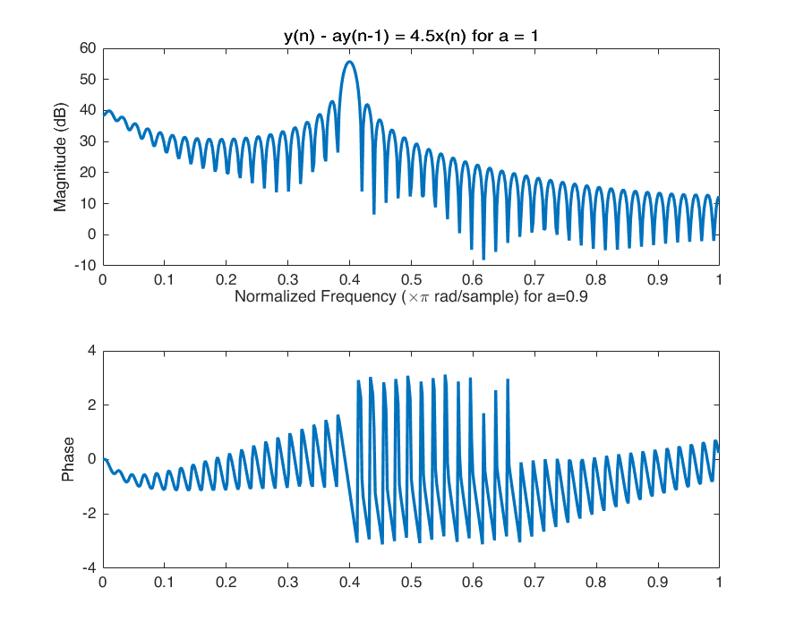
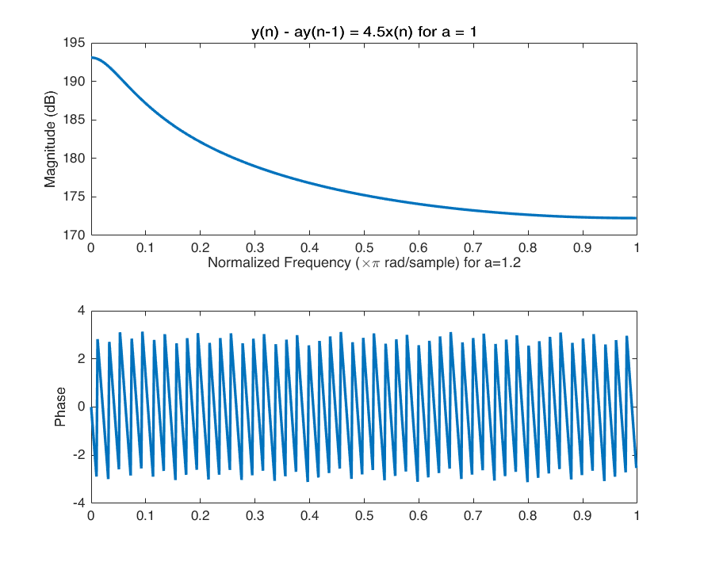
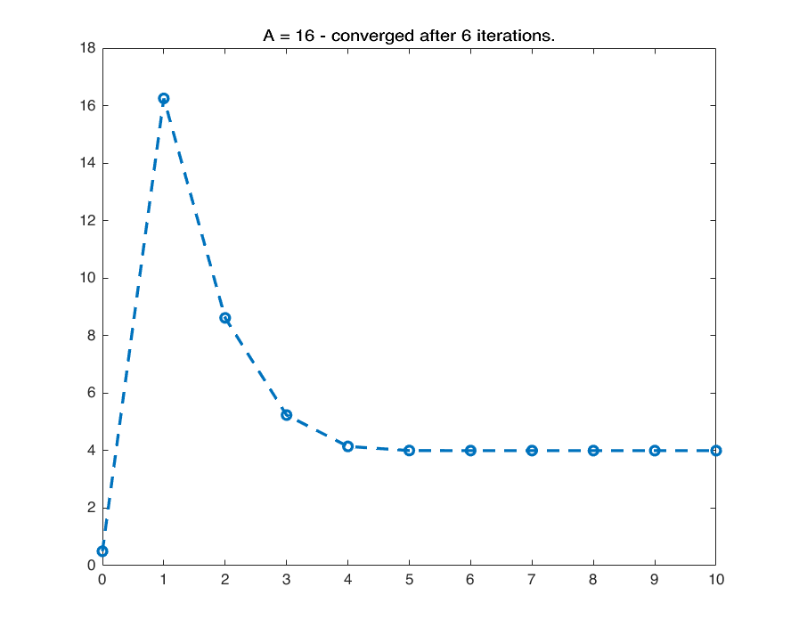
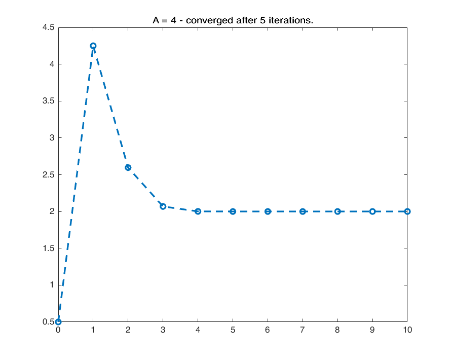
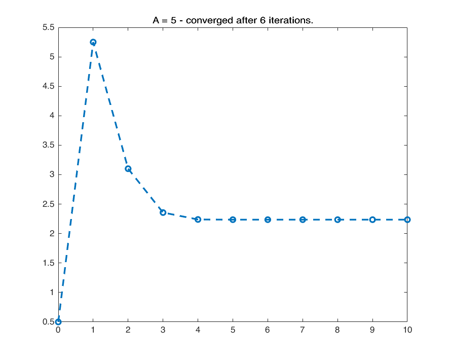
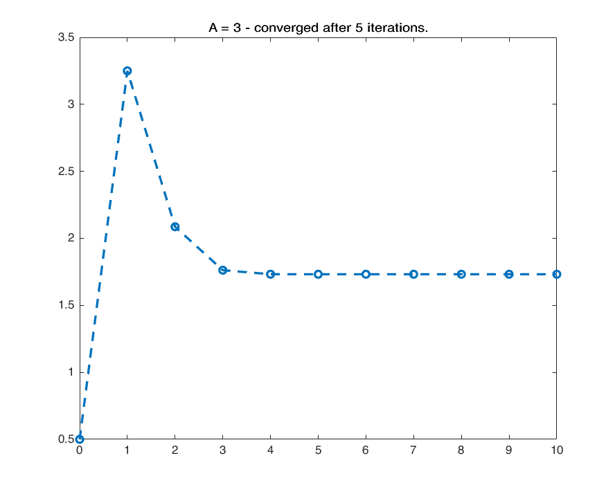

Digital Signal Processing MATLAB HW - q2
Professor: Dr. Sheikhzadeh Author: Amir Hossein Daraie - 9733023 E-mail: daraieamirh@gmail.com University: Amirkabir University of Technology
Contents
Clear recent data
clear; close all; clc;
Question 1
y(n) - ay(n-1) = 4.5x(n)
% for a = 0.5 n = 1:100; x = 3*sin(2*pi*0.2*n); a = [1 -0.5]; b = [4.5]; y = filter(b,a,x); [h ,w]=freqz(y); figure() subplot(211); plot(w/pi,20*log10(abs(h))) title(['y(n) - ay(n-1) = 4.5x(n) for a = ' int2str(0.5)]) xlabel('Normalized Frequency (\times\pi rad/sample) for a=0.5') ylabel('Magnitude (dB)') subplot(212); plot(w/pi,angle(h)); ylabel('Phase')
Question 2
% for a = -0.5 a = [1 0.5]; b = [4.5]; y = filter(b,a,x); [h ,w]=freqz(y); figure() subplot(211); plot(w/pi,20*log10(abs(h))) title(['y(n) - ay(n-1) = 4.5x(n) for a = ' int2str(-0.5)]) xlabel('Normalized Frequency (\times\pi rad/sample) for a=-0.5') ylabel('Magnitude (dB)') subplot(212); plot(w/pi,angle(h)); ylabel('Phase') % for a = 0.9 a = [1 -0.9]; b = [4.5]; y = filter(b,a,x); [h ,w]=freqz(y); figure() subplot(211); plot(w/pi,20*log10(abs(h))) title(['y(n) - ay(n-1) = 4.5x(n) for a = ' int2str(0.9)]) xlabel('Normalized Frequency (\times\pi rad/sample) for a=0.9') ylabel('Magnitude (dB)') subplot(212); plot(w/pi,angle(h)); ylabel('Phase') % for a = 1.2 a = [1 -1.2]; b = [4.5]; y = filter(b,a,x); [h ,w]=freqz(y); figure() subplot(211); plot(w/pi,20*log10(abs(h))) title(['y(n) - ay(n-1) = 4.5x(n) for a = ' int2str(1.2)]) xlabel('Normalized Frequency (\times\pi rad/sample) for a=1.2') ylabel('Magnitude (dB)') subplot(212); plot(w/pi,angle(h)); ylabel('Phase')  
Question 3
We see that initial condition plays an important rule in convergance speed: the close to the answer, the faster.
for A = [16,4,5,3] converged_iteration = 0; n = 10; t=-0:1:n; x=A*double(t >= 0 & t <= n); y = zeros(1,n+1); y(1) = 0.5; % initial condition for i = 1:n y(i+1) = 1/2*(y(i)+x(i)/y(i)); if abs(y(i+1) - sqrt(A)) < 10^-6 && converged_iteration == 0 converged_iteration = i; end end figure() plot(t,y,'o--') title(['A = ' int2str(A) ' - converged after ' int2str(converged_iteration) ... ' iterations.']) end   